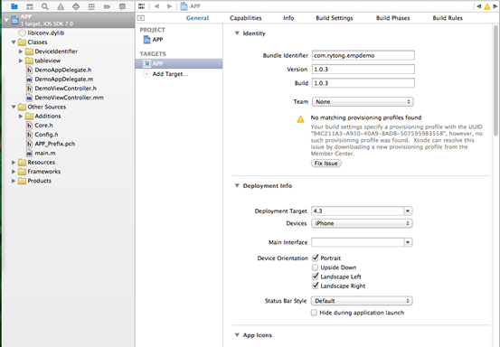
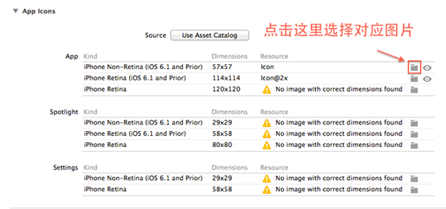
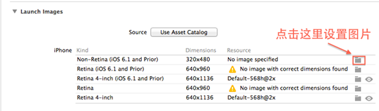
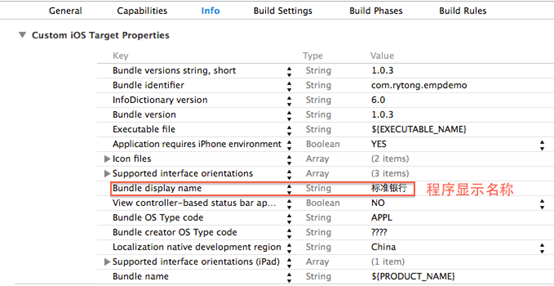
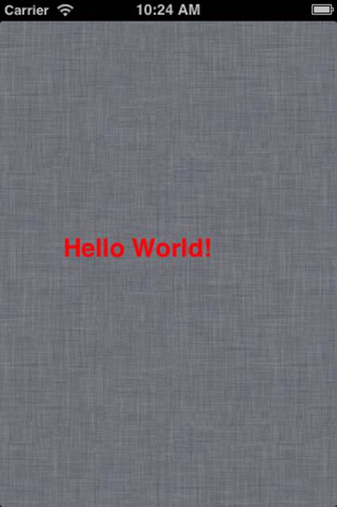

通过阅读本文，你可以了解到如何更改工程的一些相关信息，以及如何创建一个简单的HelloWorld程序。
由于本示例仅涉及到加载本地报文，所以就不需要进行配置服务器地址。
单击左侧快捷导航栏的APP图标，选择TARGETS，在这里我们可以配置一些跟工程有关的选项。
注：xcode5与以下版本的界面不同，本实例使用的xcode5的界面。

图2.1 项目信息修改截图
在General（低版本xcode是Summary）选项卡下，我们可以修改工程的Bundle Identifier（唯一识别号），Version（版本号），Devices（程序允许运行的设备类型：iPhone或iPad，或通用），Suppored Interface orientations（程序支持的方向），App icons（应用程序图标），Launch Images（程序加载图片）等。
设置应用程序图标：不同设备以及不同版本的系统的图标大小是不同的。

图 2.2 设置程序图标
设置程序首次运行加载图片：不同设备的加载图片大小是不同的。

图2.3 设置程序加载图片
在Info选项卡中，我们可以配置（Bundle display name）工程的显示名称。

图2.4 Info选项卡
下面是对这里可能出现的字段的解释：
Localiztion native development region --- CFBundleDevelopmentRegion 本地化相关，如果用户所在地没有相应的语言资源，则用这个key的value来作为默认.
Bundle display name --- CFBundleDisplayName 设置程序安装后显示的名称。应用程序名称限制在10－12个字符，如果超出，将被显示缩写名称。
Executaule file -- CFBundleExecutable 程序安装包的名称
Icon file --- CFBundleIconFile 应用程序图标名称,一般为icon.png
Bundle identifier --- CFBundleIdentifier 该束的唯一标识字符串，该字符串的格式类似com.yourcompany.yourapp，如果使用模拟器跑你的应用，这个字段没有用处，如果你需要把你的应用部署到设备上，你必须生成一个证书，而在生成证书的时候，在apple的网站上需要增加相应的app IDs.这里有一个字段Bundle identifier，如果这个Bundle identifier是一个完整字符串，那么文件中的这个字段必须和后者完全相同，如果app IDs中的字段含有通配符*，那么文件中的字符串必须符合后者的描述。
InfoDictionary version --- CFBundleInfoDictionaryVersion Info.plist格式的版本信息
Bundle OS Type code -- CFBundlePackageType：用来标识束类型的四个字母长的代码
Bundle versions string, short --- CFBundleShortVersionString 面向用户市场的束的版本字符串
Bundle creator OS Type code --- CFBundleSignature：用来标识创建者的四个字母长的代码
Bundle version --- CFBundleVersion 应用程序版本号，每次部署应用程序的一个新版本时，将会增加这个编号，在app store上用的。
Application require iPhone environment -- LSRequiresIPhoneOS:用于指示程序包是否只能运行在iPhone OS 系统上。Xcode自动加入这个键，并将它的值设置为true。您不应该改变这个键的值。
Main nib file base name -- NSMainNibFile 这是一个字符串，指定应用程序主nib文件的名称。如果您希望使用其它的nib文件（而不是Xcode为工程创建的缺省文件）作为主nib文件，可以将该nib文件名关联到这个键上。nib文件名不应该包含.nib扩展名。这个字段可以删除。
supported interface orientations -- UISupportedInterfaceOrientations 程序默认支持的方向。
注：在Summary选项卡里设置的一些选项，如版本号，设备支持的方向等，会在Info.plist里做出相应的改变。
用本程序框架创建一个HelloWorld应用将会是一件很简单的事情，
以下分本地报文和服务器报文2种方式：
修改Other Sources下的Config.h文件
找到并取消 #define NATIVE_DEVELOP（用于控制本地调试）行的注释，修改#define NATIVE_DEVELOP_FILE（用于控制读取的本地文档，默认后缀名是.xml）常量的值为@"Test"
从Resources目录下找到或新建Test.xml文件，打开编辑，编写如下报文：
<?xml version="1.0" encoding="UTF-8" ?>
<content>
<head>
<style>
.body1 {background-color:#99000000;}
.lable1 {left:60px;top:200px;font-size:24px;color:#FF0008;font-weight:bold;}
</style>
<script type="text/x-lua" src="RYTL.lua"></script>
</head>
<body class='body1' name='body'>
<label class='lable1' value='Hello World!'>
Hello World!
</label>
<body>
</content>
修改Other Sources下的Config.h文件,找到并注释 #define NATIVE_DEVELOP 行。
修改Other Sources下的Config.h文件，修改常量SERVER_URL的值，将其修改为所需要连接的服务器地址。
使用Command+R启动模拟器查看运行效果。

图2.5 Hello World！